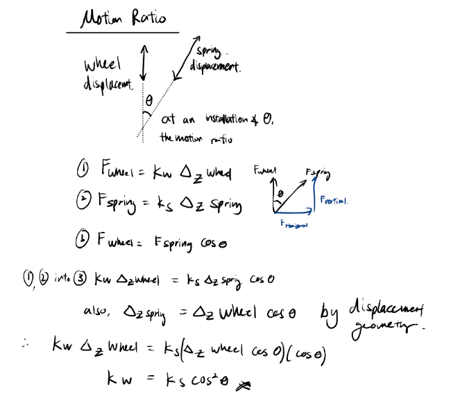
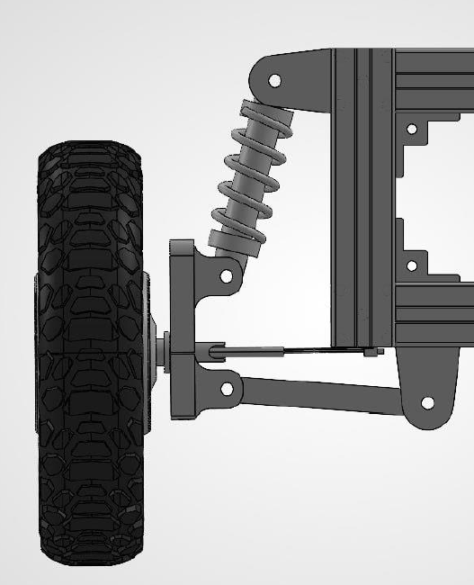
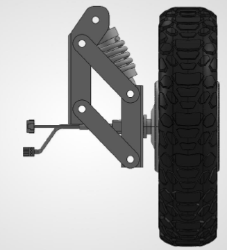

The suspension subsystem for the 65 kg autonomous runway FOD patrol UGV is governed by five core engineering constraints:
On an autonomous runway inspection robot, the suspension is a mission-enabling subsystem with four vital roles:
Assuming rigid tire behaviour, the single-corner system reduces to a 1 Degree of Freedom mass-spring-damper system. The sprung mass is connected to the road profile through the spring ks and damper cs.
Applying Newton's Second Law:
The transfer function is:
Using the canonical parameters:
The steady-state displacement is calculated from $x_{steady}=F_{corner}/k_{spring}$, with the corner force identified in the design notes as approximately 154.42 N.


When the shock is installed at an angle $\theta$, the motion ratio relates spring displacement to wheel displacement. The wheel rate is reduced by the square of the motion ratio:
The project calculations use a motion ratio of 0.95, giving:

| Spring rate (lbs/in) | Ks (N/m) | Wheel rate Kw (N/m) | Kw (N/mm) | x steady state (mm) | Natural freq. (rad/s) | Natural freq. (Hz) | Damped freq. (Hz), eta 0.7 |
|---|---|---|---|---|---|---|---|
| 30 | 5357.386 | 5089.517 | 5.090 | 31.322 | 17.697 | 2.817 | 2.011 |
| 50 | 8928.976 | 8482.528 | 8.483 | 18.793 | 22.847 | 3.636 | 2.597 |
| 100 | 17857.953 | 16965.055 | 16.965 | 9.397 | 32.311 | 5.142 | 3.672 |
| 150 | 26786.929 | 25447.583 | 25.448 | 6.264 | 39.573 | 6.298 | 4.498 |
| 200 | 35715.906 | 33930.110 | 33.930 | 4.698 | 45.695 | 7.273 | 5.194 |
| 300 | 53573.858 | 50895.165 | 50.895 | 3.132 | 55.964 | 8.907 | 6.361 |
| 400 | 71431.811 | 67860.220 | 67.860 | 2.349 | 64.622 | 10.285 | 7.345 |
| 500 | 89289.764 | 84825.276 | 84.825 | 1.879 | 72.250 | 11.499 | 8.212 |
| 550 | 98218.740 | 93307.803 | 93.308 | 1.708 | 75.776 | 12.060 | 8.613 |
| 600 | 107147.717 | 101790.331 | 101.790 | 1.566 | 79.146 | 12.596 | 8.996 |
| 650 | 116076.693 | 110272.858 | 110.273 | 1.446 | 82.377 | 13.111 | 9.363 |
| 700 | 125005.669 | 118755.386 | 118.755 | 1.342 | 85.487 | 13.606 | 9.716 |
| 750 | 133934.646 | 127237.913 | 127.238 | 1.253 | 88.487 | 14.083 | 10.057 |

| Suspension type | Advantages | Disadvantages | Remarks | Final score |
|---|---|---|---|---|
| Trailing arm | Constant track width and zero camber change; maximum space efficiency; low vertical profile. | Traverse bending moments concentrate on the main pivot shaft during spot turns. | Used as rear suspension on vehicles; suitable for strict width constraints. | 8/10 Keep as backup plan if width is an issue. |
| MacPherson strut | Leaves space for other parts at the upper arm assembly; lower part count. | Higher shock-absorber wear because skid steering exerts large stress. | Usually used on Ackermann-steering vehicles, which this robot does not use. | 6/10 Reject |
| Double wishbone | Dual arms absorb lateral bending moments during skid-steering turns and maintain a stable tyre contact patch over the full stroke. | Mechanically complex. | Typically used in performance vehicles; the available chassis width is sufficient. | 9/10 Chosen |




The PDF identifies the double wishbone as the selected suspension architecture. The trailing-arm figure is retained as a backup concept, while the MacPherson strut is rejected because of shock loading under skid steering.
| Description | Component | Link | Remarks |
|---|---|---|---|
| Wheel hub and link arms | To be custom made | N.A. | CAD done, fabricated 1 assembly |
| Shock absorber | To be purchased | Link here | Purchased, not delivered |
| Description | Component | Link | Remarks |
|---|---|---|---|
| CNC wheel hub | To be custom made | N.A. | CAD done |
| Shock absorber | To be purchased | Link here | Purchased, not delivered |
| Clevis bracket / U bracket | Purchase | Link here | Yet to purchase |